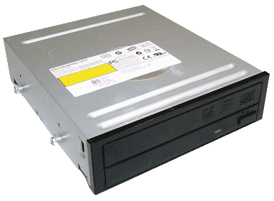

Optical Drives really only differ by what types of media they can handle and whether or not they can read and write or just read the media.
The cost of Optical drives has dropped to the point where it is a very minor purchase so if you are going to buy one for your system then I would say a read/write model is going to be what you want because the price difference is so small.
The different types of media they can handle are CD, DVD, and Blu-ray.
A DVD writer will run somewhere in the 15 to 40 dollar range.
If your purchasing one from somewhere that is charging more than 40 dollars for it then you need to go somewhere else because their prices have a huge markup and you could save money somewhere else not just on this DVD drive but most likely on all the components you want to buy from them.
If their prices are over inflated on an optical drive I would guess that everything is so just take your money somewhere else or buy your parts from a reputable online store that may or may not have an egg in the name or possibly a zon at the end.
you might have to wait a few days for your parts by purchasing them online but you will get the best deal you can by going that route.
A Blu-ray writer should run anywhere between 60 and 100 dollars if it is more than that again go somewhere else.
Physical media is quickly becoming obsolete so not having an optical drive at all in your computer is possible.
However you may find yourself in need of one at some point so if you are going to forgo installing one I would recommend you but an external optical drive that you can connect via a USB just in case you happen to need it down the road.
They are relatively inexpensive say in the 30 to 40 dollar range for one that just handles CDs and DVDs.